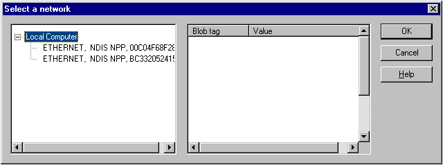

To select a network interface card (NIC) from a supplied NPP BLOB table, call the SelectNPPBlobFromTable function. This function uses the Network Monitor UI to display the NICs represented in the BLOB table and returns the NPP BLOB that represents the selected NIC.
When you call the SelectNPPBlobFromTable function, the Select a network dialog box appears. From it, you can view the details of the NPPs represented in the NPP BLOB table, select a specific NIC, and view the details of its associated NPP BLOB structure.
The following illustration shows the NICs represented in a supplied NPP BLOB table.

| For more information about | See |
|---|---|
| Selecting a NIC registered on the local computer. | How to select a registered NIC |
| Retrieving an NPP BLOB table. | How to select a NIC from a Returned NPP BLOB table |
Â
Â
Â